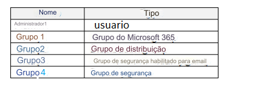

156- Você tem um locatário do Microsoft 365 que contém os objetos mostrados na tabela a seguir.

No centro de administração do Microsoft Intune, você está criando um aplicativo Microsoft 365 Apps chamado
App1. A quais objetos você pode atribuir App1?